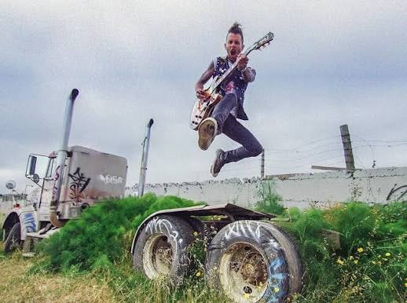
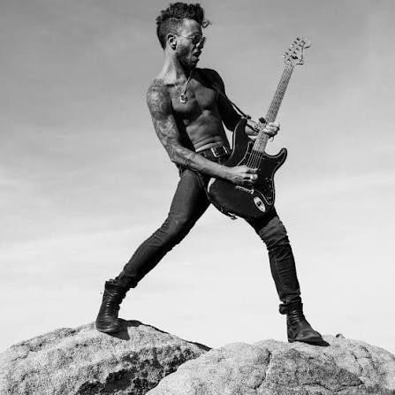
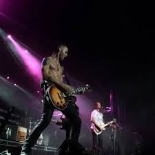

Editorial authority
High contrast, black and bone, precise typography and cinematic portraiture. Feels like an independent fashion title or art-book imprint.
Sound that moves through culture.
Multi-platinum, Grammy-nominated songwriter, composer, producer, musician and sound engineer.
From charting records to film, television and global brands, J Bowman creates sound with feeling, identity and lasting cultural impact.
Brand essence
Sound that moves through culture.
J Bowman is an independent creative practice led by a multi-disciplinary music maker whose work moves between records, picture, brands and culture. He combines the instincts of a songwriter, the craft of an engineer and the perspective of a visual storyteller to create sound that carries identity.
The required shift: from respected talent known through credits and relationships to a visible creative auteur with a recognisable cultural signature.
Brand pillars
Original thinking, composition and a recognisable creative point of view.
Deep technical knowledge across writing, performance, engineering, production and mix.
Fluency across genres, eras, moving image, brands and contemporary creative culture.
High-level experience without ego-led distance; responsive, intuitive and built around the work.
An established artist actively creating what comes next, without trading on nostalgia.
J Bowman finds the emotional frequency of an idea and makes it heard.
Music supervisors, sync agencies, film and television producers, directors, advertising creatives, production companies and brand-side content teams.
Fashion houses, designers, photographers, creative directors, luxury and lifestyle brands, runway producers, experiential teams and cultural institutions.
Could this identity sit confidently on a film title card, a record sleeve, a fashion label, a studio wall and a global campaign treatment without changing character?
Began in Chicago. Relocated to the Bay Area when signed to write and record with producer Sandy Pearlman — The Clash, Black Sabbath, Blue Öyster Cult.
David Foster · Kanye West · Chris Isaak · 2Pac · Pink · Cake · Paul Rodgers · Dallas Austin · Don Was · Sam Hollander · George Clinton · Fatboy Slim · Thievery Corporation / Rob Garza
Producing and composing for Paramount/Skydance. Compositions and syncs on The Late Show with Stephen Colbert, The Daily Show, CBS Mornings, CBS News RoundUp, NFL on CBS Sports, The View, Magnum PI, Hawaii Five-O and CMT Top 20 — plus Coco, Valentine’s Day, Ida Red, Kiss Kiss Bang Bang, Yogi Bear, Hall Pass and Cutlass.
HBO · Showtime · Tylenol · Corona Beer · A2 Milk · Slim Fast · LCBO/Crown Agency · Vegas Golden Knights · Denver Broncos
Engineer, guitarist and mixer on Say Hey (I Love You) — #18 Billboard Hot 100. Composer, guitarist, mixer and engineer on Sound of Sunshine — #1 Billboard Adult Alternative Songs. Six further Michael Franti & Spearhead singles charting on Billboard AAA. Engineer on Cake’s Prolonging the Magic — #33 Billboard 200.
All names, roles, titles, chart positions, networks, studios and award language require checking against approved wording and cleared rights.
Cultured. Exacting. Restless. Magnetic. Unforced.
The history provides authority. The expression remains current and future-facing.
Refinement should reveal texture, intelligence and lived experience.
Creative depth must still make services and pathways to commission immediately clear.
Let the body of work carry weight. Avoid inflated claims and self-mythology.
The brand can enter fashion because it has taste, not because music symbols have been placed on merchandise.
Write in compact, assured language. Use sensory words connected to tension, tone, movement, texture and emotion. Lead with ideas and outcomes; let credits appear as proof. First person is preferred for process, belief and point of view. Third person is appropriate for biography, press and credentials.
Generic “full-service studio” language; long credit dumps on primary pages; nostalgia-first storytelling; genre clichés; overuse of “legendary,” “iconic” or “visionary”; equal visual weight for every service; obvious waveform, headphone, guitar-pick or vinyl-record logos.
Tagline
Sound that moves through culture.
The line the identity runs on. It carries movement and reach in five words, holds across records, picture, brands and fashion, and needs no credit list behind it to make sense.
Descriptor
Written. Played. Produced. Scored. Recorded. Mixed.
Six words for the full span of the work — set tracked and uppercase beneath the wordmark, or run as a single line in credits and email signatures.
Alternates
Chicago instincts. Bay Area craft.
Places the origin story in two beats. Strongest for press and biography, weaker for sync outreach.
Decades inside the record. One point of view.
Converts the credit list into authority without naming a single collaborator. Pairs cleanly with the brand essence.
Presented at moodboard level, with no single winner selected. Combine only after one strategic territory is chosen. The final system should have one dominant idea.
High contrast, black and bone, precise typography and cinematic portraiture. Feels like an independent fashion title or art-book imprint.

Modernist typography disrupted by controlled analogue marks, crops and layering. Feels technical, tactile and alive.
A contemporary identity built around cataloguing, contact sheets and selective historic material. Feels storied without becoming nostalgic.
J Bowman
Writer · Composer · Producer · Musician · Sound Engineer
Monogram · avatars, garment labels, equipment, stamps, motion signature
Entity lockup · imprint, contracts — the word Music never joins the wordmark
Secondary mark · where the individual, not the entity, is the story
2–4 second ident, with silent motion-only alternative
Minimum clear space on all sides equals the cap height of the J. Nothing crosses it — no type, rule, image edge or crop mark.
Wordmark: 24 mm print, 120 px screen. Monogram: 12 mm woven label, 32 px avatar. Below wordmark minimum, use the monogram.
Do not restack, condense, outline, add effects, place over busy image areas, respace the tracking, or pair with waveform, headphone or vinyl symbols.
Settled: the master wordmark is J BOWMAN. The word Music is never incorporated into the logo or wordmark, in any lockup or at any scale.
Display · Belleza
Aa Bb Jj
ABCDEFGHIJKLMNOPQRSTUVWXYZ 0123456789
Single weight, set uppercase and tracked 0.10–0.18em. Editorial silhouette with a hand-cut flare. Used for the wordmark, section headings and title cards. Never set as body copy.
Information · Montserrat
Aa Bb Jj
The contrast between upright Belleza and slanted Montserrat italic is the signature type moment. Use it once per composition, never twice.
Belleza · clamp 3.4–8.5rem · tracking 0.04em · uppercase · line-height 0.92
Belleza · 1.8–3rem · tracking 0.10em · uppercase
Montserrat 300 · 1.05–1.35rem · line-height 1.55
Montserrat 300 · 0.9–1rem · line-height 1.7 · measure 32rem max
Montserrat 500 · 0.6rem · tracking 0.22em · uppercase
Montserrat 500 · 0.55rem · tracking 0.18em · uppercase
The system performs in pure black and white before colour is added. One signature colour carries the brand — a purple with red in it, warm enough to read as taste rather than costume, deep enough to hold its own on a leather label and a title card.
Ink
Primary ground. Near-black with a violet cast.
Smoke
Secondary surface, dividers on dark, matte product.
Bone
Primary light ground and type on ink.
Warm white
Paper, print stock, framed fields.
Shell
Tertiary surface, packaging, archive pages.
Getting the purple right — three candidates
Violet with red underneath. Reads as taste on cream, as blood in low light. Holds in thread, ink and foil.
Cooler and more electric. Sharper on screen, more technical, closer to Route B. Loses warmth on textile.
Hotter and more overtly femme. Strong at small scale and on black, harder to keep premium at volume.
Ink and bone carry roughly 90% of any composition. The signature appears as a mark, a hairline, a single word, or one full-bleed moment per piece — never as a background for text-heavy layouts.
Bone on Bruised Plum and Bruised Plum on Bone both clear 4.5:1. Never set Orchid Ash type on Bone, or Bruised Plum type on Ink. The two forbidden pairings are given no design token, so reaching for one takes a conscious hand-written value.
Bruised Plum is the single signature. Confirm against a physical test before production: woven label, screen print on black, foil on paper.
Cinematic portraiture; close detail of hands, instruments, tape, circuitry and worn studio surfaces; contact sheets; imperfect crops; hard flash used sparingly; deep shadows; fashion-editorial composition; fragments of notation and process. Balance present-day portraits with a tightly curated archive. Never allow the archive to make the brand feel retrospective.


Grayscale by default, high contrast, restrained grain. Colour is earned — reserved for one hero frame per story. Live colour gels may stay, but only where they read as light, not as filter.
Crop past the comfortable edge. Hands, strings, jaw, cable, tattoo. A tight fragment beside a full figure builds the rhythm.
Lower-left, Montserrat italic, lower case, small. One phrase only. Metadata in medium 500 caps sits opposite.
One art-directed portrait and studio shoot producing stills, vertical video, process footage, clean interview audio and detail shots in a single production.
Modular frames and crop marks give every layout the feel of a proof sheet rather than a poster.
Catalogue numbering and track metadata carry information with no decoration. Every asset can be numbered.
Rhythm informed by bars, cuts, layers and silence — structural, abstract, never a literal waveform.
Silence is a graphic device. Oversized type at low opacity, wide margins, and one element per field.
Build a cultural label that can make objects — not a musician’s merch range.
Fashion is designed into the identity from the beginning through scale, placement, materials and restraint. The system must work at 12 mm on a woven label, oversized across a back print, blind embossed into leather, stitched tonally into a cap and applied to packaging without losing integrity.
Premium heavyweight tee, overshirt, cap and studio jacket using tonal embroidery, woven labels and small-format marks.
Numbered lyric or score prints, studio notebooks, record bags, scarves or patches tied to specific releases and collaborations.
Capsules with a designer, visual artist, photographer or material specialist. Each needs a creative reason beyond logo placement.
Wardrobe and environmental identity for listening sessions, screenings, showcases, installations and fashion presentations.
Use fewer, better pieces. Prioritise fabric, cut, construction and finish. Any product should be desirable to someone who has never heard the music.
Woven label · 12 mm · tonal
Back print · oversized · single colour
Numbered edition certificate
Blind emboss · leather · no ink
A premium portfolio and an active commissioning engine. Every channel answers four questions quickly: who is J Bowman, what can he create, why trust him, and how do I start a conversation?
Art-directed, mobile-first, opening on a reel. Work organised by Records, Picture and Brands. Concise about, selected credits, services, journal, enquiry.
A 60–90 second master reel plus targeted cuts for film and television, advertising, records and fashion. Roles and outcomes always captioned.
Brief, creative idea, role, process, result. Depth around a selective body of proof rather than every credit shown equally.
A modular system for process, archive, current work, point of view, credits, collaborators, sonic experiments and culture references.
Email signature, pitch deck, one-sheet, EPK, reel thumbnails, private project links and concise capability PDFs.
Consistent metadata, service pages, tagged credits, LinkedIn positioning, reel architecture and rights-cleared portfolio descriptions.
Film title card · centred, tracked, one rule
Showreel lower third · role always captioned
Social square · metadata top, italic phrase bottom
Outreach cover · bone, wordmark, descriptor